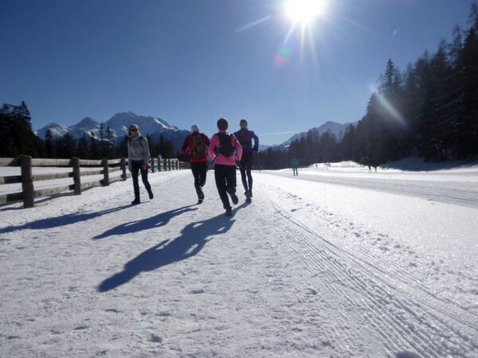

Alpinrunner
Lauftraining mit Brigitte und Marco
Lauftraining mit Brigitte und Marco
Sonntag, 10. März ( Die Strecke Arosa Weisshorn laufen wir bei schönem Wetter)
Strecke: wir laufen vom Sportcenter Dieschen in Lenzerheide los gegen Lenz und zurück ca. 16 Km
Treffpunkt: 9.00 Uhr Lehrlingshaus Chur für Fahrgemeinschaft / 9.30 Uhr Parkplatz Sportcenter Dieschen
Wer Lust hat kann sich nach dem Lauftraining im warmen Wasser im Bad des H2Lai erholen

Mitläufer können sich hier melden
Kommentar von Petra Baettig |
Komme gerne mit!
Kommentar von Petra Jäger |
Bin au dabi, werda miar aber offa loh d Strecki ev. abzkürza falls s'Wetter z 'fescht strubüslet. Bi dr feina Crémschnitta bin i aber sicher dabi.
Kommentar von Corina |
Bin gerne dabei; komme direkt zum Dieschen PP. Lg Corina
Kommentar von Silvia und Enya |
Wir kommen gerne mit und sind um 9 Uhr beim Lehrlingshaus
Kommentar von Lädi & Iris |
wir kommen direkt nach Parkplatz Dieschen
Kommentar von Cornelia |
Komme auch. Ab PP Dieschen.
Kommentar von Daniel von Euw |
Komme auch, direkt ins Dieschen.
Kommentar von Daniel Zähner |
Bin kurzentschlossen auch dabei. Gruass Dani
Dieses Formular läuft weiterhin auf der bestehenden Website von alpinrunner.ch.
Zum Formular